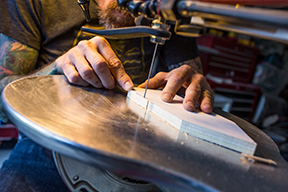

Practice 7: Photoshop
Getting to Know Photoshop
Opening Images
Familiar with Work Area
Zoom & Pan
Undo a Command
Save Your Work
Opening Images
Get Familiar With the Work Area
Return to Top
Learn How to Zoom and Pan

Undo a Command
Return to Top
Save Your Work
Return to Top
Return to Main Photoshop Page